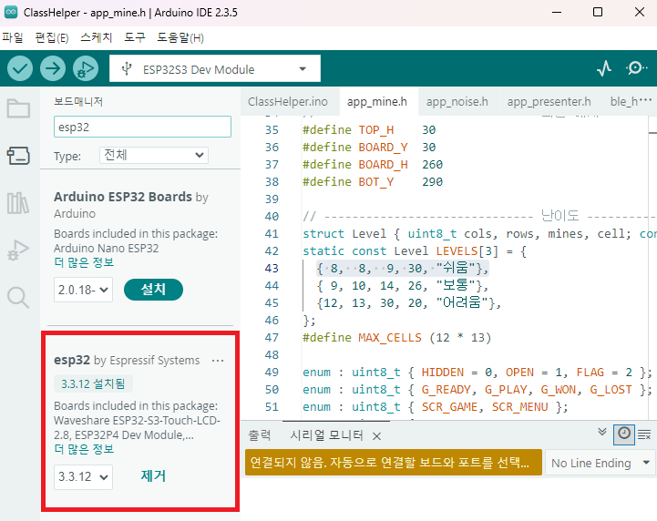
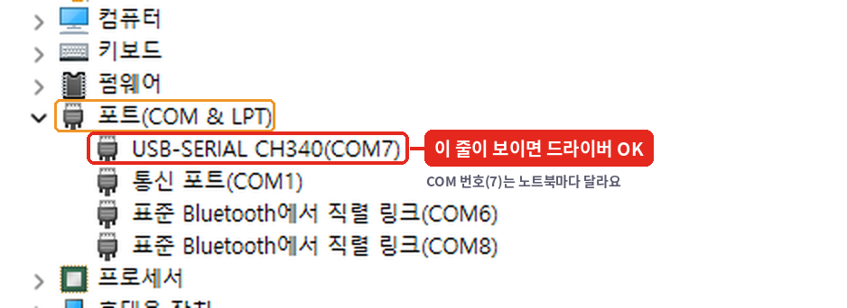
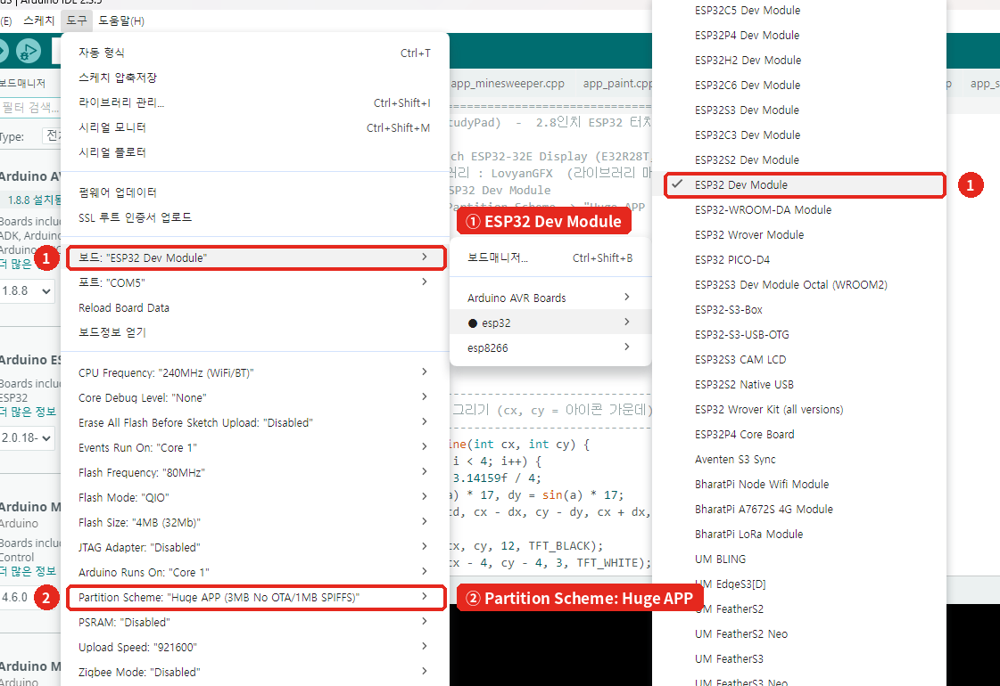
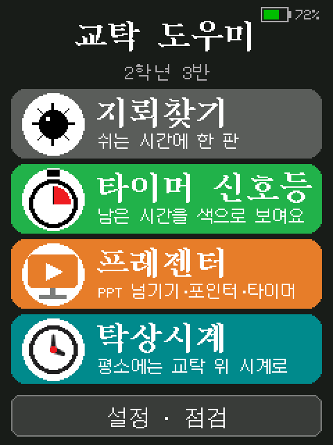
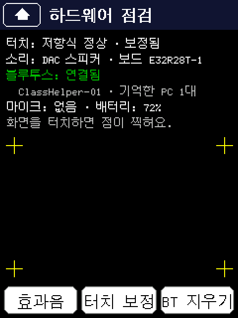
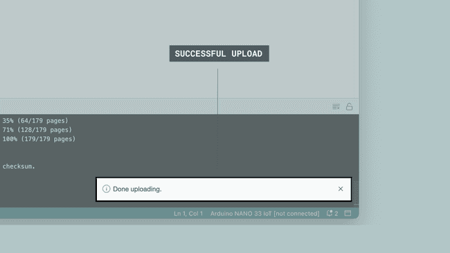
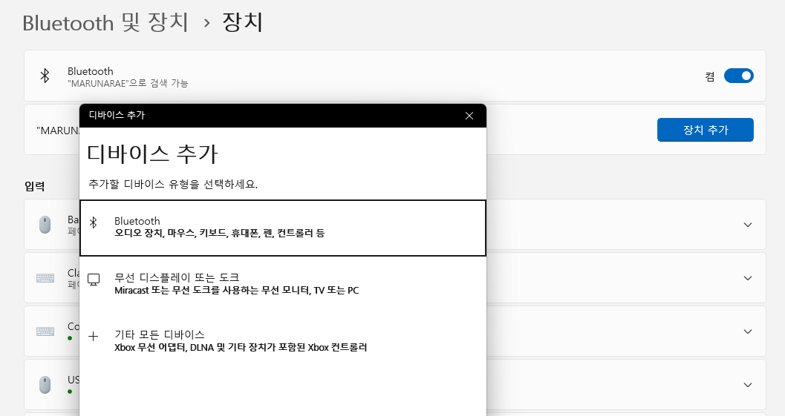
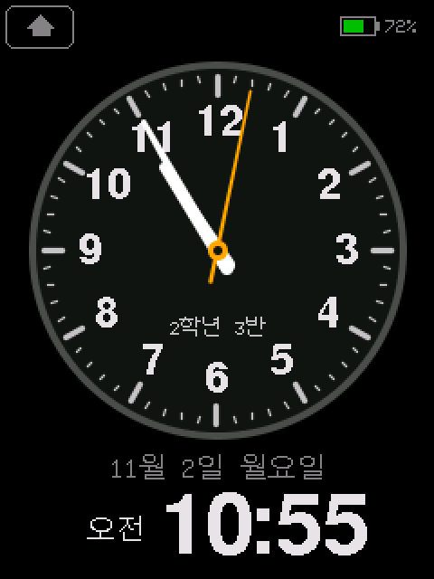
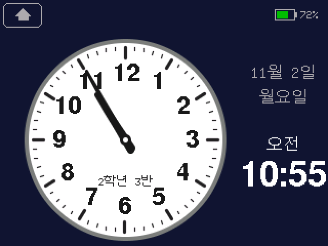

초보 가이드북
막혔을 때 여기부터 보세요. 거의 모든 문제가 아래 중 하나입니다.
준비 — 한 번만 설치
연수 전에 미리 해 두면 1차시가 편합니다. 인터넷이 되는 Windows 노트북 기준이고, 처음 한 번만 합니다.
arduino.cc/en/software에서 Windows용을 받아 설치합니다. 설치 중 드라이버를 물으면 모두 설치.
왼쪽 두 번째 아이콘(보드 매니저)에서 esp32 검색 → esp32 by Espressif Systems 3.x 설치. 10분쯤 걸립니다.
왼쪽 세 번째 아이콘(라이브러리 매니저)에서 LovyanGFX 검색 → 설치.
보드를 데이터용 USB-C 케이블로 꽂고, Tools → Port에 COM 번호가 생기는지 확인. 안 생기면 아래 USB 드라이버.

- File → Preferences → Additional boards manager URLs에
https://espressif.github.io/arduino-esp32/package_esp32_index.json을 넣고 확인 → 다시 검색합니다. - 학교망에서 내려받기가 막힐 수 있습니다. 집이나 다른 네트워크에서 미리 설치해 오세요.
USB 드라이버 — 포트가 안 생길 때
이 보드는 USB와 칩 사이에 USB-시리얼 변환 칩 CH340C가 따로 있어서, PC에 그 드라이버가 없으면 Port 메뉴에 아무것도 안 나옵니다. 대부분 Windows가 저절로 깔지만, 안 되면 직접 설치합니다.
시작 버튼 오른쪽 클릭 → 장치 관리자. 보드를 꽂았을 때 포트(COM & LPT)에 USB-SERIAL CH340 (COM○)가 생기면 끝.
기타 장치에 노란 느낌표 "USB Serial"이 보이면 드라이버가 없는 것입니다.
이 보드의 칩은 CH340C입니다. 제조사 WCH 누리집(wch-ic.com)에서 CH341SER.EXE(Windows)를 받아 실행 → INSTALL. 이미 깔려 있으면 UNINSTALL 후 INSTALL.
USB를 뺐다 꽂고 아두이노 IDE의 Port 메뉴를 다시 엽니다.

Tools 메뉴 — 업로드 전에 확인
| 메뉴 | 값 | 안 맞으면 |
|---|---|---|
| Board | ESP32 Dev Module (S3 아님) | 빨간 글자 Tools -> Board 를 ESP32 Dev Module 로… |
| Partition Scheme | Huge APP (3MB No OTA/1MB SPIFFS) | Sketch too big |
| PSRAM · Flash Size | Disabled · 4MB (기본값) | 켤 때 멈춤 |
| Port | 보드를 꽂으면 생기는 COM 번호 | 업로드 안 됨 |

2인 1조로 하는 법
보드 하나를 두 분이 함께 씁니다. 코드와 AI 대화는 우리 조 노트북 한 대에서만 합니다. 두 노트북에 코드가 나뉘면 어느 쪽이 최신인지 헷갈립니다.
| 자리 | 하는 일 |
|---|---|
| 🧑💻 운전석 — 우리 조 노트북 | 제미나이에 붙여 넣기 · 아두이노 IDE에 덮어쓰기 · 업로드 |
| 🧭 조수석 — 다른 노트북 | 워크벤치·가이드북을 띄워 다음 할 일을 읽어 주기 · 보드를 눌러 확인 · 빨간 오류 맨 위 세 줄 찾기 |
- 자리 바꾸기 — 실습 중간마다(슬라이드에 표시). 노트북은 그대로 두고 사람만 바꿉니다.
- config.h 이름 — 반 이름 칸에 두 분 이름을 함께 적어도 됩니다. 블루투스 이름은 다른 조와 겹치지 않게(예:
Team3-Science). - 3차시 블루투스 — 처음엔 우리 조 노트북에 연결합니다. 짝 노트북으로 옮길 때는 우리 조 노트북의 블루투스를 끄고, 짝 노트북에서 장치 추가.
- 연수 뒤에 — 완성 코드는 워크벤치에서 언제든 다시 받을 수 있습니다. 보드를 받으면 그대로 올려 쓰면 됩니다.
터치 보정 — 처음 켤 때 한 번
이 보드는 저항식 터치입니다. 손가락이 닿는 넓이가 아니라 누르는 힘으로 위치를 재서, 손톱이나 펜 끝으로 꾹 눌러야 잘 인식합니다. 보드마다 숫자가 조금씩 달라 처음에 한 번 위치를 맞춥니다.
"터치 보정" 화면과 함께 왼쪽 위에 노란 + 가 나옵니다.
+ 가운데를 손톱·펜 끝으로 꾹 눌렀다 뗍니다. 초록으로 바뀌면 다음 귀퉁이 × 4.
"터치 보정 끝!" 뒤 첫 화면. 보정값은 보드에 저장돼 코드를 다시 올려도 그대로입니다.
설정 → 점검에서 화면 여기저기를 눌러 점이 손끝에 찍히는지 봅니다.



- 첫 화면 → 설정 → 점검 → [터치 보정].
- 터치가 너무 어긋나 설정까지 못 가면: RESET을 누르고 5초 안에 BOOT를 1초 누르기 (BOOT를 누른 채 켜면 업로드 모드가 되니, 켜진 뒤에 누르기).
- 한 귀퉁이를 잘못 누르면 "한 번 더 해 볼게요"가 뜨며 처음부터 다시 합니다.
올리는 법
워크벤치 맨 위 연수용 시작 코드 zip을 받아 바탕화면에 압축 풀기.
ClassHelper 폴더 안 ClassHelper.ino 더블클릭. 탭이 13개 열리면 정상.
왼쪽 위 → 버튼. 첫 번째는 2~4분, 두 번째부터는 1분 안팎.
아래에 Done uploading(또는 Hard resetting)이 나오면 끝. 보드 화면을 봅니다.

- IDE 아래 검은 창(출력 창)의 빨간 줄을 통째로 드래그해 복사합니다. 맨 위 한 줄보다 처음 나온 error 줄과 그 위아래가 중요합니다.
- AI에게 이렇게 붙여 넣습니다:
아두이노 IDE에서 ESP32 보드(E32R28T-1)에 올리다가 이 오류가 났어. 무슨 뜻인지 쉽게 설명하고, 어느 파일 몇째 줄을 어떻게 고치면 되는지 알려 줘.그 아래에 빨간 글자. - AI가 고친 코드를 주면 해당 탭에 통째로 덮어쓰기 → 다시 업로드. 같은 오류가 두 번 나면 아래 안 될 때를 먼저 봅니다.
- 아두이노는 폴더 이름과
.ino파일 이름이 같아야 엽니다. - 내 버전을 따로 두고 싶으면 폴더째 복사한 뒤, 폴더와
.ino이름을 둘 다 같은 영문 이름으로 바꿉니다.
AI 코드 넣는 법 — 탭에 통째로 덮어쓰기
새 앱(2·3차시)은 AI가 파일 하나 전체를 줍니다. 그 파일의 탭에 통째로 바꿔 넣습니다.
제미나이 답의 코드 상자 오른쪽 위 복사 버튼.
아두이노 IDE 위쪽에서 app_timer.h처럼 그 앱의 탭을 누릅니다.
Ctrl+A(전체 선택) → Ctrl+V(붙여넣기) → Ctrl+S(저장).
→ 버튼. 첫 화면의 그 칸이 켜졌는지 봅니다.

ClassHelper.ino나helper.h에 잘못 붙이면 전체가 멈춥니다.- 그랬다면
Ctrl+Z로 되돌리거나, 시작 코드를 다시 받아 그 탭만 원래대로 붙입니다.
고치는 법 — 두 가지 방식
| 방식 | 언제 | 이렇게 말합니다 |
|---|---|---|
| 바꿀 줄만 받기 | 파일이 길 때 (지뢰찾기 600줄) 한두 군데만 바꿀 때 | "파일 전체를 다시 쓰지 말고 찾을 줄과 바꿀 줄만 알려 줘." |
| 전체 다시 받기 | 새 앱을 만들 때 기능을 크게 더할 때 | "나머지는 그대로 두고 ○○를 더해 줘. 전체 코드를 다시 줘." |
"쉬움 난이도의 지뢰를 6개로 줄여 줘. 바꿀 줄만."
"버튼을 눌러도 아무 일도 안 일어나. 왜 그런지 찾아서 고쳐 줘."
"노랑이 되는 때를 1분 남았을 때로 바꿔 줘. 나머지는 그대로."
"이 오류를 고쳐서 전체 코드를 다시 줘: (오류 맨 위 세 줄)"
한 번에 하나씩
여러 가지를 한꺼번에 바꾸면 어디서 망가졌는지 찾기 어렵습니다. 하나 바꾸고 올려서 눌러 보고, 또 하나. 업로드가 1분이라 이게 결국 더 빠릅니다.
잘 되던 것이 망가졌다면
워크벤치의 완성 코드를 그 탭에 통째로 붙이면 다시 시작할 수 있습니다. 앱 파일 하나만 바꾸면 되도록 나뉘어 있어서, 다른 앱은 영향을 받지 않습니다.
안 될 때
Sketch too big 업로드 전
- 이유
- 한글 글꼴 때문에 코드가 약 2.2MB인데, 기본 설정은 1.2MB까지만 담습니다.
- 해결
- Tools → Partition Scheme → Huge APP (3MB No OTA/1MB SPIFFS).
cannot find -l… / ld returned 1 exit status 업로드 전
- 이유
- Windows 사용자 이름이 한글이면 보드 패키지가 한글 경로(
C:\Users\홍길동\…)에 깔려 링크 단계에서 파일을 못 찾습니다. - 해결
- ① 아두이노 IDE를 닫습니다. ②
C:\arduino폴더를 만들고,%LOCALAPPDATA%\Arduino15폴더를 통째로 복사해 이름을C:\arduino\data로. ③ 메모장으로%USERPROFILE%\.arduinoIDE\arduino-cli.yaml을 열어directories:아래 세 줄을data: C:\arduino\data·downloads: C:\arduino\staging·user: C:\arduino\sketchbook으로 고치고 저장. ④ IDE를 다시 열어 업로드. 코드 폴더도C:\arduino아래에 두면 더 안전합니다.
Tools -> Board 를 ESP32 Dev Module 로 바꾸세요 업로드 전
- 이유
- Tools → Board 가 다른 보드(예: ESP32S3 Dev Module)로 되어 있습니다. 일부러 알려 주는 오류입니다.
- 해결
- Tools → Board → esp32 → ESP32 Dev Module을 고르고 다시 업로드. Partition Scheme은 보드를 바꾸면 기본값으로 돌아가니 Huge APP도 다시 확인.
Sketch too big — AI 코드를 넣은 뒤 업로드 전
- 이유
- 이 보드는 블루투스 부품이 커서 이미 공간의 96%를 씁니다. AI가 아주 긴 코드를 주면 넘칠 수 있습니다.
- 해결
- Partition Scheme이 Huge APP인지 먼저 확인. 맞다면 같은 대화에 "코드를 더 짧게, 기능은 그대로" 라고 하거나 워크벤치 완성 코드로 바꿉니다.
LovyanGFX.hpp: No such file 업로드 전
- 이유
- 화면 라이브러리가 설치되지 않았습니다.
- 해결
- 라이브러리 매니저에서 LovyanGFX 설치.
Failed to connect / Connecting…에서 멈춤 업로드 중
- 이유
- 보드가 업로드를 받을 준비가 안 됐습니다.
- 해결
- BOOT를 누른 채 업로드 버튼을 누르고, Connecting…이 보이면 BOOT를 뗍니다. 끝나면 RESET을 한 번.
Port에 아무것도 없어요 연결
- 이유
- 충전 전용 케이블이거나, 이 보드는 USB-시리얼 변환 칩을 따로 써서, PC에 그 드라이버가 없으면 포트가 안 생깁니다.
- 해결
- ① 데이터용 케이블인지 ② 장치 관리자의 기타 장치에 "USB Serial"이 노란 느낌표로 있으면 CH340 드라이버 CH341SER.EXE를 설치(제조사 WCH). 설치 후 케이블을 다시 꽂습니다. 자세히는 USB 드라이버.
터치가 엉뚱한 곳을 눌러요 / 잘 안 눌려요 터치
- 이유
- 저항식 터치는 보드마다 숫자가 달라 보정이 필요하고, 살짝 대면 인식이 안 됩니다.
- 해결
- 손톱이나 펜 끝으로 꾹 누릅니다. 위치가 어긋나면 설정 → 점검 → [터치 보정], 거기까지 못 가면 RESET 후 5초 안에 BOOT 1초.
색이 이상해요 (필름처럼 뒤집힘 / 빨강·파랑이 바뀜) 화면
- 이유
- 같은 라벨이라도 화면 부품이 조금 다를 수 있습니다.
- 해결
config.h의 화면 칸에서 색이 뒤집혀 보이면LCD_INVERT를 1로, 빨강·파랑이 바뀌면LCD_BGR를 1로 바꾸고 다시 업로드.
업로드는 됐는데 화면이 그대로예요 업로드 후
- 이유
- 보드가 새 프로그램으로 다시 시작하지 않았습니다.
- 해결
- 보드의 RESET 버튼을 한 번 누릅니다.
빨간 오류가 잔뜩 나와요 AI 코드
- 이유
- AI가 규칙(helper.h)에 없는 이름을 쓰거나, 코드가 중간에 잘렸습니다.
- 해결
- 오류의 맨 위 세 줄을 복사해 같은 대화에 "이 오류를 고쳐서 전체 코드를 다시 줘". 두 번 해도 안 되면 워크벤치 완성 코드로 바꿉니다.
첫 화면에서 칸이 계속 회색이에요 AI 코드
- 이유
- 앱 파일 맨 끝
const App app = {…}의 마지막 값이 아직false입니다. - 해결
- 그 값을
true로 바꾸고 업로드. 또는 "app 의 마지막 값을 true 로 바꿔 줘".
글자가 □□로 나와요 화면
- 이유
- 한글이 없는 글꼴을 썼습니다.
- 해결
- "한글은 fonts::efontKR_16 처럼 efontKR 글꼴만 써 줘."
화면이 거울처럼 뒤집혀 보여요 화면
- 이유
- 보드마다 화면 방향이 조금 다를 수 있습니다.
- 해결
config.h의LCD_OFFSET_ROTATION을 0 → 6으로 바꿔 올리고, 설정 → 점검 → [터치 보정]을 다시 합니다.
소리가 안 나요 소리
- 이유
- 스피커가 없거나, 소리 크기가 꺼져 있습니다.
- 해결
- ① 보드 스피커 단자(1.25mm 2핀)에 스피커를 꽂았는지 ② 설정 → 소리 크기 ③ 점검 화면의 [효과음] ④ 작으면
sfx.h의DAC_BOOST를 3으로. 그래도 안 되면config.h의AMP_ON_LEVEL을 HIGH로.
타이머 숫자가 멈춰 있어요 / 타이머 화면에서 터치가 안 먹어요 AI 코드
- 이유
- AI가
delay(1000)으로 1초씩 멈춰 기다리게 만들었습니다. 멈춘 동안은 화면도 터치도 멈춥니다. - 해결
- 같은 대화에 "delay 를 쓰지 말고 millis() 로 시간을 재게 바꿔 줘. 전체 코드를 다시 줘."
노트북 목록에 내 보드가 안 보여요 블루투스
- 이유
- 보드가 이미 다른 노트북에 연결돼 있거나, 노트북 블루투스가 꺼져 있습니다.
- 해결
- ① 노트북 블루투스 켜기 ② 다른 노트북에 연결돼 있으면 그쪽에서 연결 끊기 ③ 보드 RESET 후 다시 장치 추가.
목록에 ClassHelper-01이 여러 개예요 블루투스
- 이유
- 여러 보드가 같은 이름을 쓰고 있습니다.
- 해결
config.h의BT_NAME을 우리 조만의 영어 이름으로 바꿔 업로드한 뒤, 노트북에서 잘못 연결한 장치를 제거하고 다시 추가.
PC는 "연결됨"인데 보드는 "기다리는 중" / 연결됐다 끊겼다 해요 블루투스
- 이유
- 보드와 PC가 서로 기억하는 연결 정보(본딩)가 어긋났습니다. 보드는 PC를 최대 3대까지 보드 안 저장공간에 기억하고, 이 기억은 코드를 다시 올려도 지워지지 않습니다. 다른 PC에 먼저 연결했거나, PC 쪽에서만 장치를 지운 경우에 생깁니다.
- 해결
- ① 보드: 첫 화면 → 설정 → 점검 → BT 기억 지우기를 두 번 (보드가 다시 켜짐) ② PC: 블루투스 설정에서 그 보드를 장치 제거 (예전에 연결했던 다른 PC에서도) ③ PC에서 다시 장치 추가. 점검 화면에 연결됨(초록)이 뜨면 성공. 노란 보안 확인 전/실패에서 멈추면 ①②를 한 번 더.
프레젠터를 누르면 "PC와 연결해 주세요"만 떠요 블루투스
- 이유
- 아직 PC와 블루투스로 연결되지 않았다는 기다림 화면입니다. 연결되는 순간 저절로 넘기기 화면으로 바뀝니다.
- 해결
- 아래 블루투스 연결 순서대로 PC에서 장치 추가. 교실 데스크톱은 블루투스가 없는 경우가 많아 동글이 필요합니다. PC에 "연결됨"인데도 이 화면이면 바로 위 항목대로 양쪽 기억을 지우고 다시 연결합니다.
점은 초록인데 PPT가 안 넘어가요 프레젠터
- 이유
- 키는 지금 앞에 있는 창으로 갑니다.
- 해결
- 슬라이드쇼 화면을 마우스로 한 번 클릭. 글자 단축키가 안 먹으면 PC의 한/영을 영문으로.
화면이 꺼져서 아무것도 안 보여요 절전
- 이유
- 자동 절전입니다. 안 만지면 정한 시간(기본 10분) 뒤에 잠들고, 20초 전에 먼저 어두워집니다. 프레젠터·타이머 신호등·탁상시계 화면에서는 잠들지 않습니다.
- 해결
- 화면을 한 번 누르거나 BOOT를 누르면 하던 화면으로 깨어납니다(지뢰찾기는 새 판). 시간은 첫 화면 → 설정 → 안 만지면 자동 절전(3분·10분·30분·안 함)에서 바꿉니다.
블루투스 연결 — 처음 한 번
config.h의 BT_NAME을 Team3-Science처럼 우리 조 영어 이름(16자까지, 다른 조와 다르게)으로 바꾸고 업로드 (1차시).
Windows 설정 → 블루투스 및 장치. 블루투스가 꺼져 있으면 켭니다.
장치 추가 → Bluetooth → 목록에서 내 보드 이름을 누릅니다. 숫자 입력 없이 바로 연결됩니다.
프레젠터 제목줄의 점이 초록(노랑 = 보안 확인 중). 첫 화면 → 설정 → 점검에서도 "블루투스: 연결됨"이 보입니다.

- 노트북은 보드를 무선 키보드·마우스로 압니다. 설치할 프로그램이 없습니다.
- 한 번 연결하면 다음부터는 보드를 켜기만 해도 저절로 이어집니다. 짝 노트북에 쓰려면 원래 노트북의 블루투스를 끄고 짝 노트북에서 장치 추가.
- 교실 데스크톱 PC에는 블루투스가 없는 경우가 많습니다. 노트북이나 블루투스 동글이 필요합니다.
- 보드 뒷면 BOOT 버튼은 프레젠터 화면에서 "다음 장"입니다. 화면을 안 보고도 넘길 수 있습니다. 1초 길게 누르면 바로 절전합니다.
- 첫 화면 → 설정 → 켜면 바로 시작을 [발표]로 두면 전원을 켜자마자 프레젠터가 켜집니다.
탁상시계로 쓰기
첫 화면 네 번째 칸 탁상시계. 평소에는 충전선을 꽂아 교탁 위에 세워 두고 시계로 씁니다. 이 화면에서는 자동 절전하지 않습니다.



시계 화면을 한 번 누르면 메뉴 → 시간 맞추기. 년·월·일·시·분을 −/+로 맞추고 저장. 길게 누르면 빨리 바뀝니다.
메뉴 → 방향 바꾸기 → 노란 테두리 중 바닥으로 둘 쪽(충전선이 나오는 쪽)을 누릅니다. 세로·가로 네 방향 모두 됩니다. 시계 화면에만 적용되고, 다른 기능은 세로로 돌아옵니다.
메뉴의 모양(밝게/어둡게)과 초침(켬/끔). 보드 뒷면 BOOT를 짧게 눌러도 모양이 바뀝니다.
설정 → 안 만지면을 [시계로] 하면, 3분 동안 안 만질 때 절전 대신 시계가 됩니다. 켜면 바로 시작을 [시계]로 하면 켜자마자 시계.
- 이 보드에는 따로 시계 칩이 없습니다. 그래서 시간을 30분마다 보드 저장공간에 적어 두고, 꺼졌다 켜지면 마지막으로 적은 시간부터 이어 갑니다. 꺼져 있던 동안은 빠지므로 시계 아래에 "시간 확인 필요"가 뜹니다. 화면을 누르면 바로 시간 맞추기가 열립니다(날짜는 대개 그대로라 시·분만 고치면 됨).
- 배터리가 바닥(3.35V 아래)이면 꺼지기 전에 스스로 절전해서 시간을 지킵니다. 충전하고 화면을 누르면 깨어납니다.
- 와이파이가 있으면
config.h의CLOCK_WIFI를 1로,WIFI_SSID·WIFI_PASS를 적어 올리면 시계 화면에 들어갈 때와 6시간마다 인터넷 시간으로 맞춥니다. 로그인 화면이 뜨는 학교 와이파이는 안 되고, 휴대폰 핫스팟은 됩니다.
AI를 쓸 때의 책임
- 개인정보는 AI에 적지 않습니다. 학생 이름, 성적, 연락처를 프롬프트에 넣지 않습니다.
- AI는 틀립니다. 그럴듯한 코드가 작동하지 않거나, 없는 기능을 있다고 할 때가 있습니다. 올려서 직접 눌러 봐야 압니다.
- 책임은 사람에게 있습니다. 수업에 쓰는 기기는 교사가 확인하고 씁니다. 경고음 크기·깜빡임이 학생에게 불편하지 않은지도 봅니다.
- 학생과 해 볼 때는 AI 서비스와 계정의 연령 기준을 먼저 확인합니다.